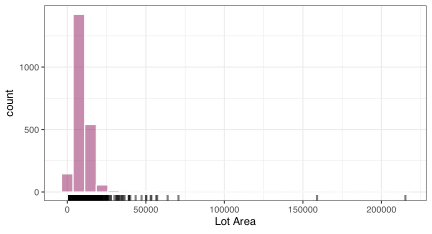
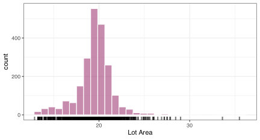
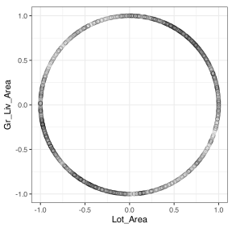

req_pkg <- c("bestNormalize", "embed", "tidymodels", "splines2")
# Check to see if they are installed:
pkg_installed <- vapply(req_pkg, rlang::is_installed, logical(1))
# Install missing packages:
if ( any(!pkg_installed) ) {
install_list <- names(pkg_installed)[!pkg_installed]
pak::pak(install_list)
}4 Transforming Numeric Predictors
The corresponding book chapter is concerned with operations to improve how numeric predictor variables are represented in the data prior to modeling. We separate these operations into two categories:
- preprocessing methods are actions that the model requires such as standardization of variables.
- feature engineering transformations are those that your particular data set requires to predict the outcome successfully.
In either case, we estimate these transformations exclusively from the training set and apply them to any data (e.g., the training set, test set, and/or new or unknown data). This is generally true and applies to upcoming chapters on categorical data and other transformations.
In tidymodels, just about everything you want to do to your predictors can be accomplished using the R formula method or, better still, the recipes package. We shall describe both.
4.1 Requirements
You’ll need 4 packages (bestNormalize, embed, splines2, and tidymodels) for this chapter. You can install them via:
Let’s load the meta package and manage some between-package function conflicts.
library(tidymodels)
tidymodels_prefer()
theme_set(theme_bw())4.2 Data Sets
The data sets used here are both in R packages that have already been installed. Let’s work with the primary data set: the Ames Iowa housing data.
In the last chapter, our manipulation and splitting code was:
data(ames, package = "modeldata")
ames <-
ames %>%
select(Sale_Price, Bldg_Type, Neighborhood, Year_Built, Gr_Liv_Area, Full_Bath,
Half_Bath, Year_Sold, Lot_Area, Central_Air, Longitude, Latitude) %>%
mutate(
Sale_Price = log10(Sale_Price),
Baths = Full_Bath + Half_Bath/2
) %>%
select(-Half_Bath, -Full_Bath)
set.seed(3024)
ames_split <- initial_split(ames, strata = Sale_Price, breaks = 5)
ames_train <- training(ames_split)
ames_test <- testing(ames_split)We’ll work with ames_train almost exclusively here.
4.3 Standard R Formulas
Model formulas in R are identical to those in S, which Chambers and Hastie introduced in Statistical Models in S (1991). A broader discussion can be found in two blog posts (one and two).
The formula has a few basic operators:
- The tilde (
~) separates the outcome columns from the predictor columns. Anything to the left is considered an outcome, and the right-hand side defines predictors (e.g.,outcome ~ predictor - A dot is a wildcard for any columns in the data set that are not outcomes (e.g.,
y ~ .). - Plus signs signify the symbolic addition of columns to the formula (typically predictors). For example,
y ~ x1 + x2indicates one outcome and two predictor columns. To indicate arithmetic addition (or any other computations), you can wrap the items in the identity functionI()such asy ~ I(x1 + x2). - You can use the minus sign to remove columns. This may not be implemented in some modeling functions.
- The colon indicates interaction terms (described in a future chapter).
There is further syntax described below.
Here’s an example of a basic formula that creates two predictor columns by specifying a symbolic formula comprised of two numeric predictors.
f_01 <- Sale_Price ~ Baths + Year_BuiltHere’s a short function to show basic results:
show_columns <- function(f) {
model.matrix(f, data = ames_train) %>%
tibble::as_tibble() %>%
dplyr::slice(c(1, 3, 9))
}
show_columns(f_01)
#> # A tibble: 3 × 3
#> `(Intercept)` Baths Year_Built
#> <dbl> <dbl> <dbl>
#> 1 1 1 1961
#> 2 1 1.5 1971
#> 3 1 2 1962It does not use row-wise arithmetic additions of the two columns. To do that, you can use the identify function:
# One slope term, not two
f_02 <- Sale_Price ~ I(Full_Bath + Half_Bath)Symbolic addition creates separate columns of the data set. In chapter TODO, we’ll discuss main effects and interactions. The main effects are features composed of a single predictor (as in f_01 above). Interaction effects are one or more model terms that combine the information of all the predictors in a multiplicative way. There are a few ways to specify them. Here are three methods for specifying two-factor interactions between predictors:
# `:` is used for specific interactions
f_03 <- Sale_Price ~ Baths + Year_Built + Baths:Year_Built
# `*` is used to make all interactions of two or more terms
f_04 <- Sale_Price ~ Baths * Year_Built
# `()^D` makes interactions up to order D of all of the columns
# within the parenthesis
f_05 <- Sale_Price ~ (Baths + Year_Built)^2
show_columns(f_05)
#> # A tibble: 3 × 4
#> `(Intercept)` Baths Year_Built `Baths:Year_Built`
#> <dbl> <dbl> <dbl> <dbl>
#> 1 1 1 1961 1961
#> 2 1 1.5 1971 2956.
#> 3 1 2 1962 3924For this data set, the right-hand side of f_05 could be shortened to (.)^2.
Since Baths and Year_Built are both numeric, their interactions are created by simply multiplying their values, i.e., I(Baths * Year_Built).
By default, the model formula creates an intercept column where the value of each row is 1.0. To prevent the intercept from being added, there are two syntaxes:
f_06 <- Sale_Price ~ Baths - 1
f_07 <- Sale_Price ~ Baths + 0
show_columns(f_07)
#> # A tibble: 3 × 1
#> Baths
#> <dbl>
#> 1 1
#> 2 1.5
#> 3 2What happens with factor predictors? Their specification is the same:
f_08 <- Sale_Price ~ Bldg_Type However, most of the time1, the formula method creates columns of binary 0/1 to replace the original factor column. Since there are 5 possible values of Bldg_Type, the formula creates 4 columns of indicator variables, each corresponding to a specific level. The first factor level is excluded by default. This is discussed more in Working with Categorical Predictors.
# Note that the resulting column names smash the original column
# name an its factor level together with no delimiter.
show_columns(f_08)
#> # A tibble: 3 × 5
#> `(Intercept)` Bldg_TypeTwoFmCon Bldg_TypeDuplex Bldg_TypeTwnhs Bldg_TypeTwnhsE
#> <dbl> <dbl> <dbl> <dbl> <dbl>
#> 1 1 0 0 0 0
#> 2 1 0 0 1 0
#> 3 1 0 1 0 0For interaction terms, the syntax is the same as the one shown above. In the case of categorical predictors, all combinations of the predictors are created. In the following case, Central_Air has two levels. A two-way interaction of these two predictors creates 4 \(\times\) 1 = 4 interaction columns.
f_09 <- Sale_Price ~ (Bldg_Type + Central_Air)^2
show_columns(f_09)
#> # A tibble: 3 × 10
#> `(Intercept)` Bldg_TypeTwoFmCon Bldg_TypeDuplex Bldg_TypeTwnhs Bldg_TypeTwnhsE
#> <dbl> <dbl> <dbl> <dbl> <dbl>
#> 1 1 0 0 0 0
#> 2 1 0 0 1 0
#> 3 1 0 1 0 0
#> # ℹ 5 more variables: Central_AirY <dbl>, `Bldg_TypeTwoFmCon:Central_AirY` <dbl>,
#> # `Bldg_TypeDuplex:Central_AirY` <dbl>, `Bldg_TypeTwnhs:Central_AirY` <dbl>,
#> # `Bldg_TypeTwnhsE:Central_AirY` <dbl>What happens when you exclude the intercept? All factor levels receive a binary indicator column for a single categorical predictor.
f_10 <- Sale_Price ~ Bldg_Type + 0
show_columns(f_10)
#> # A tibble: 3 × 5
#> Bldg_TypeOneFam Bldg_TypeTwoFmCon Bldg_TypeDuplex Bldg_TypeTwnhs Bldg_TypeTwnhsE
#> <dbl> <dbl> <dbl> <dbl> <dbl>
#> 1 1 0 0 0 0
#> 2 0 0 0 1 0
#> 3 0 0 1 0 0However, this may produce unexpected results when multiple factor predictors exist. The first factor in the formula creates all possible indicators (e.g., 5 for Bldg_Type) while the others have all but one factor level created. For example, these two formulas would have different columns:
f_11 <- Sale_Price ~ Bldg_Type + Central_Air + 0
f_12 <- Sale_Price ~ Central_Air + Bldg_Type + 0
show_columns(f_11) %>% names() %>% sort()
#> [1] "Bldg_TypeDuplex" "Bldg_TypeOneFam" "Bldg_TypeTwnhs" "Bldg_TypeTwnhsE"
#> [5] "Bldg_TypeTwoFmCon" "Central_AirY"
show_columns(f_12) %>% names() %>% sort()
#> [1] "Bldg_TypeDuplex" "Bldg_TypeTwnhs" "Bldg_TypeTwnhsE" "Bldg_TypeTwoFmCon"
#> [5] "Central_AirN" "Central_AirY"There model predictions and anova() results will be the same but the interpretation of their coefficients will be very different.
You can use in-line functions within a recipe. For example:
library(splines2)
#> Warning: package 'splines2' was built under R version 4.3.3
f_13 <- Sale_Price ~ log(Gr_Liv_Area) + scale(Lot_Area) + naturalSpline(Latitude, df = 3)
show_columns(f_13)
#> # A tibble: 3 × 6
#> `(Intercept)` `log(Gr_Liv_Area)` `scale(Lot_Area)`
#> <dbl> <dbl> <dbl>
#> 1 1 6.798 0.1994
#> 2 1 6.895 -1.103
#> 3 1 7.455 0.4139
#> # ℹ 3 more variables: `naturalSpline(Latitude, df = 3)1` <dbl>,
#> # `naturalSpline(Latitude, df = 3)2` <dbl>,
#> # `naturalSpline(Latitude, df = 3)3` <dbl>uses three in-line functions:
- The first is a simple log transformation of the gross living area.
- The use of
scale()will compute the mean and standard deviation ofLot_Areaand use those to center and scale that column. - The function
splines2::naturalSpline()will create a set of basis functions (described in chapter TODO) that will replace the originalLatitudecolumn.
In the second and third cases, R’s machinery will estimate the relevant statistics and embed them as attributes in the corresponding columns. For each in-line function, the exact same operations are conducted on new data (say when predict() is called).
Finally, be aware that each formula captures the environment in which it was created. For example:
environment(f_12)
#> <environment: R_GlobalEnv>
# The number of objects in the session used to create this web page (up to now):
length(ls(envir = environment(f_12)))
#> [1] 22If an object that used f_12 is saved to disk, it will also contain the 22 objects in the global environment. If any of these objects are large, it can unintentionally make the saved data object large. Note that using the base function object.size() will not take into account anything stored in the environment (so the binary file size is underestimated). lobstr::obj_size() will give a more accurate estimate.
The butcher package has tools to strip off these unneeded objects from formulas (or objects that contain formulas). Also, butcher::weigh() returns a tibble with the size of each element contained in the object (if any).
4.4 What is a Recipe?
A recipe is a set of sequential steps that specify what operations should be conducted on a set of predictors. Operations could include:
- Modifying a predictor’s encoding (e.g., date to month/day/year columns)
- Adding new features, such as basis expansions.
- Standardizing or transforming individual predictors.
- Feature extraction or embeddings on multiple predictors.
- Removing features.
Recipes can be used by themselves or as part of a modeling pipeline. For illustration, we’ll show how to use them directly. The process is to
specify -> estimate -> applythe recipe. In terms of syntax, the analogous functions are:
recipe() -> prep() -> bake()We’ll start simply by trying to “unskew” a predictor’s distribution.
4.5 Resolving Skewness
The main text mentions that the distribution of the Lot_Area variable is skewed. Let’s see what that looks like.
ames_train %>%
ggplot(aes(Lot_Area)) +
geom_histogram(bins = 30, col = "white", fill = "#8E195C", alpha = 1 / 2) +
geom_rug(alpha = 1 / 2, length = unit(0.03, "npc"), linewidth = 1) +
labs(x = "Lot Area")
To get started, we initialize a recipe with the recipe() function and a data set:
unskew_rec <- recipe(Sale_Price ~ ., data = ames_train)The formula method doesn’t do much here: it records the outcome (columns to the left of ~), which are predictors (to the right of ~ ), and their data types. Note that the . in the formula means that all columns, except those to the left, should be considered predictors. When using a formula to start a recipe, keep it simple. It won’t accept any in-line functions (like sqrt() or log()); it wants you to change the variables inside of recipe steps.
Regarding the data argument: any data set with the appropriate columns could be used. The initial recipe work is just cataloging the columns. You could even use a “zero row slice” such as ames_train[0,] and get the same results. You might want to do something like this if you have a very large training set (to reduce the in-memory footprint). The main advantage of using ames_train is convenience (as we’ll see later).
We’ll add different recipe step functions from this initial object to declare what we want to do. Let’s say we will transform the lot area column using the Yeo-Johnsom transformation. To do this:
unskew_rec <-
recipe(Sale_Price ~ ., data = ames_train) %>%
step_YeoJohnson(Lot_Area)
# or use a dplyr selector:
unskew_rec <-
recipe(Sale_Price ~ ., data = ames_train) %>%
step_YeoJohnson(any_of("Lot_Area"))
unskew_rec
#>
#> ── Recipe ───────────────────────────────────────────────────────────────────────────
#>
#> ── Inputs
#> Number of variables by role
#> outcome: 1
#> predictor: 10
#>
#> ── Operations
#> • Yeo-Johnson transformation on: any_of("Lot_Area")or starts_with("Lot_") and so on.
This only specifies what we want to do. Recall that the Yeo-Johnson transformation estimates a transformation parameter from the data. To estimate the recipe, use prep():
unskew_rec <- prep(unskew_rec)
# or, to use a different data set:
unskew_rec <- prep(unskew_rec, training = ames_train)
#> Warning in prep(unskew_rec, training = ames_train): ! The previous data will be used by `prep()`.
#> ℹ The data passed using `training` will be ignored.
unskew_rec
#>
#> ── Recipe ───────────────────────────────────────────────────────────────────────────
#>
#> ── Inputs
#> Number of variables by role
#> outcome: 1
#> predictor: 10
#>
#> ── Training information
#> Training data contained 2196 data points and no incomplete rows.
#>
#> ── Operations
#> • Yeo-Johnson transformation on: Lot_Area | TrainedNote that the printed recipe shows that Lot_Area was resolved from the original request for any_of("Lot_Area").
What was the estimate of the transformation parameter? The tidy() method can tell us:
# Get the list of steps:
tidy(unskew_rec)
#> # A tibble: 1 × 6
#> number operation type trained skip id
#> <int> <chr> <chr> <lgl> <lgl> <chr>
#> 1 1 step YeoJohnson TRUE FALSE YeoJohnson_VL1H3
# Get information about the first step:
tidy(unskew_rec, number = 1)
#> # A tibble: 1 × 3
#> terms value id
#> <chr> <dbl> <chr>
#> 1 Lot_Area 0.1503 YeoJohnson_VL1H3Now that we have a trained recipe, we can use it via bake():
# Get the list of steps:
bake(unskew_rec, new_data = head(ames_train))
#> # A tibble: 6 × 11
#> Bldg_Type Neighborhood Year_Built Gr_Liv_Area Year_Sold Lot_Area Central_Air
#> <fct> <fct> <int> <int> <int> <dbl> <fct>
#> 1 OneFam North_Ames 1961 896 2010 20.52 Y
#> 2 OneFam North_Ames 1971 864 2010 20.11 Y
#> 3 Twnhs Briardale 1971 987 2010 13.67 Y
#> 4 Twnhs Briardale 1971 1092 2010 13.67 Y
#> 5 Twnhs Northpark_Villa 1975 836 2010 14.62 Y
#> 6 OneFam Sawyer_West 1920 1012 2010 19.83 N
#> # ℹ 4 more variables: Longitude <dbl>, Latitude <dbl>, Baths <dbl>,
#> # Sale_Price <dbl>Did it work? Let’s look at the whole training set:
unskew_rec %>%
bake(new_data = ames_train) %>%
ggplot(aes(Lot_Area)) +
geom_rug(alpha = 1 / 2, length = unit(0.03, "npc"), linewidth = 1) +
geom_histogram(bins = 30, col = "white", fill = "#8E195C", alpha = 1 / 2) +
labs(x = "Lot Area")
One shortcut we can take: the recipe has to apply each step to the training data after it estimates the step. By default, the recipe object saves the processed version of the data set. This can be turned off using the retain = FALSE option to prep(). Since the training set is already in the recipe, we can get it with no additional computations using
bake(unskew_rec, new_data = NULL) The main site mentions a few other methods that could be used besides Yeo-Johnson:
- Box-Cox:
step_BoxCox() - Percentile:
step_percentile() - orderNorm:
step_orderNorm()
Note that the last method has its step function in the bestNormalize package; various recipe extension packages can be used. A full set of recipe steps for CRAN packages is available on tidymodels.org.
There is also a general step for simple computations that do not need to be estimated. If we were to log transform the data, we would use:
recipe(Sale_Price ~ ., data = ames_train) %>%
step_mutate(Lot_Area = log10(Lot_Area))Other single variable transformations can be found in the following R packages: car, trafo, and Transform.
4.6 More on Recipe Selectors
The previous section showed a recipe step that operated on a single column. You can select one or more predictors in a variety of different ways within a recipe:
- Bare, unquoted column names such as
Lot_Area. -
dplyr package selectors, including
starts_with(),contained(), and so on. - Special, recipe-only selectors:
- Role-based:
all_predictors(),all_outcomes(), and so on. - Type-based:
all_numeric(),all_factor(), … - Combinations:
all_numeric_predictors()etc.
- Role-based:
Two important dplyr selectors are all_of() and any_of(). These take character vectors of column names as inputs. all_of() will select all of the columns in the vector and will fail if they are not all present when the recipe step is executed. any_of() will select any of the columns that are given and won’t fail, even if none are available.
This is important for a few reasons. Some steps can combine or eliminate columns. A recipe should be fault tolerant; if the previous step removed column A and the next step strictly requires it, it will fail. However, if any_of(c("A")) is used, it will not 2.
There is a documentation page for recipe selectors as well as the reference page.
4.7 Standardizing to a common scale
The two main steps for standardizing columns to have the same units are step_normalize() and step_range(). A common pattern for the former is:
norm_rec <-
unskew_rec %>%
step_zv(all_predictors()) %>%
step_normalize(all_numeric_predictors())
norm_rec
#>
#> ── Recipe ───────────────────────────────────────────────────────────────────────────
#>
#> ── Inputs
#> Number of variables by role
#> outcome: 1
#> predictor: 10
#>
#> ── Training information
#> Training data contained 2196 data points and no incomplete rows.
#>
#> ── Operations
#> • Yeo-Johnson transformation on: Lot_Area | Trained
#> • Zero variance filter on: all_predictors()
#> • Centering and scaling for: all_numeric_predictors()step_zv() is for removing “zero-variance” (zv) predictors. These are columns with a single unique value. Since step_normalize() will try to divide by a column’s standard deviation, this will fail if there is no variation in the column. step_zv() will remove such columns that exist in the training set.
We recycled the previous recipe, which has already been trained. Note that in the output above, only the first step is labeled as “Trained”. When we run prep() on this recipe, it only estimates the remaining two steps.
Again, once we prep(are) the recipe, we can use bake() to get the normalized data.
Another important point is that recipes are designed to utilize different data sets appropriately. The training set is used with prep() and ensures that all the estimations are based on it. There is, as is appropriate, no re-estimation of quantities when new data are processed.
4.8 Spatial Sign
Unsurprisingly, the step to compute the spatial sign is step_spatialsign(). It projects two or more numeric columns onto a multidimensional hypersphere. The resulting data has columns the same name as the input:
library(bestNormalize)
sp_sign_rec <-
recipe(Sale_Price ~ Lot_Area + Gr_Liv_Area, data = ames_train) %>%
step_YeoJohnson(any_of(c("Lot_Area", "Gr_Liv_Area"))) %>%
step_zv(all_predictors()) %>%
step_orderNorm(all_numeric_predictors()) %>%
step_spatialsign(all_numeric_predictors()) %>%
prep()
sp_sign_data <- bake(sp_sign_rec, new_data = NULL)
sp_sign_data
#> # A tibble: 2,196 × 3
#> Lot_Area Gr_Liv_Area Sale_Price
#> <dbl> <dbl> <dbl>
#> 1 0.4496 -0.8932 5.021
#> 2 0.2349 -0.9720 5.061
#> 3 -0.9012 -0.4334 4.982
#> 4 -0.9474 -0.3199 4.944
#> 5 -0.7424 -0.6700 5.079
#> 6 0.1537 -0.9881 4.829
#> # ℹ 2,190 more rowssp_sign_data %>%
ggplot(aes(Lot_Area, Gr_Liv_Area)) +
geom_point(cex = 2, alpha = 1 / 10, pch = 1) +
coord_equal() 
4.9 Other resources for learning about recipes
-
tidymodels.org: Preprocess your data with recipes - TMwR chapter: Feature Engineering with recipes
- TMwR chapter: Dimensionality Reduction
- 2023 Posit conference workshop slides: Intro: Using recipes
- 2023 Posit conference workshop slides: Feature engineering using recipes
- Roles in recipes
- Ordering of steps
- Stackoverflow Questions tagged
[r-recipes]
Some model functions require these binary indicators, and others do not. You should assume they convert factor predictors to binary indicators; we will alter you when a specific function does not.↩︎
More accurately, it will probably be fine. Most steps are permissive; others are not. The previously described
step_mutate()would fail ifLot_Areawas previously eliminated.↩︎